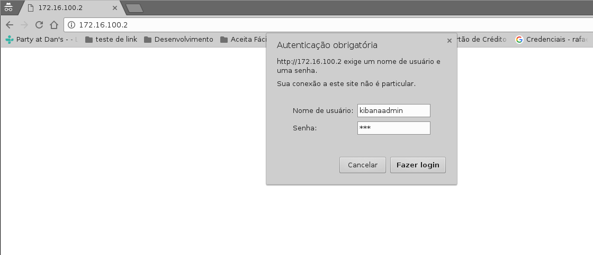
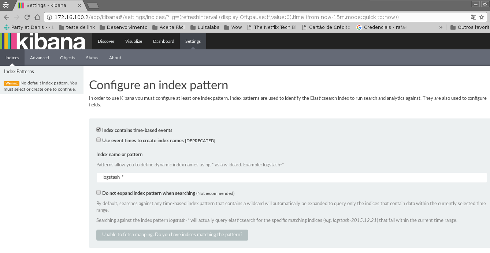
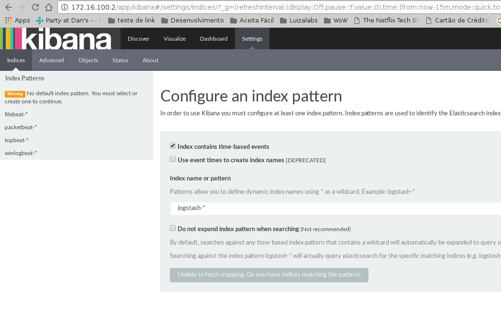
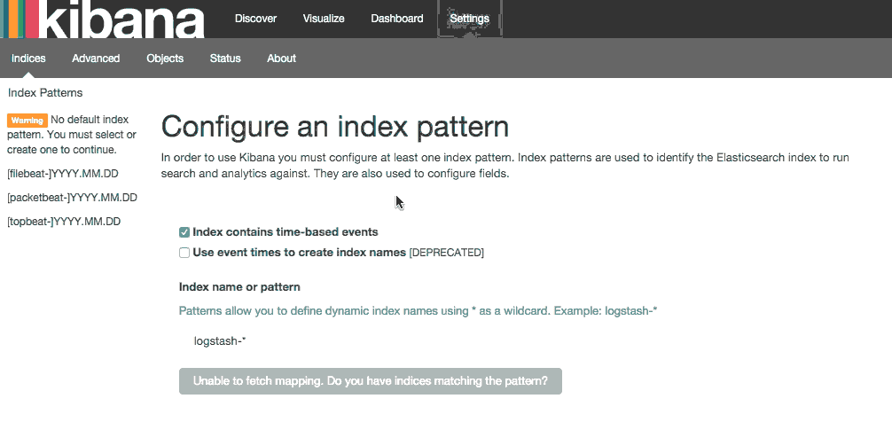

Em meu último post A importância de um log expliquei um pouco porque é importante ter logs em uma aplicação.
Neste post demonstrarei como centralizar seus logfiles usando a stack ELK (Elasticsearch + Logstash + Kibana). Existem ferramentas que já salvam o log da aplicação diretamente no Logstash, este não será o foco deste post, quem sabe um próximo ;).
AVISO IMPORTANTE: Faz algum tempo que venho guardando este post, e mesmo ele estando incompleto (me desculpem pelo perfeccionismo) já vou postar logo, pois eu mesmo sinto falta de ler o que está aqui, já precisei subir essa stack 2 vezes e tive que consultar um arquivo markdown meio feio. Então colaborem! Quando quiserem me perguntem qualquer coisa sobre o assunto e estarei disposto a ajudar e a melhorar o que escrevi aqui.
Antes de mais nada...
O que é Elastic? A Elastic é uma empresa sensacional (opinião minha) que criou várias ferramentas interessantes para facilitar a vida do desenvolvedor :). Os produtos que serão abordados neste post são:
- Elasticsearch: Uma ferramenta muito utilizada para indexar/armazenar dados e devolvê-los de forma rápida a quem consulta estes dados através de uma API bem poderosa;
- Logstash: Recebe dados de diversas fontes diferentes, simultaneamente, processa e armazena estes dados em algum lugar, funciona como se fosse analogamente um "roteador de logs";
- Kibana: Nosso visualizador de logs que consome a api do Elasticsearch e mostra essa informação em forma gráfica ou textual;
- Filebeat: Um client que lê logs de algum host e os envia para o logstash.
Instalar JDK
sudo apt-get install openjdk-8-jre-headless
Elastic search 2.x não funciona com Java9.
Referência: https://github.com/elastic/elasticsearch/issues/18761
Instalar Elasticsearch
wget -qO - https://packages.elastic.co/GPG-KEY-elasticsearch | sudo apt-key add -
echo "deb https://packages.elastic.co/elasticsearch/2.x/debian stable main" | sudo tee -a /etc/apt/sources.list.d/elasticsearch-2.x.list
apt-get update && sudo apt-get install elasticsearch
update-rc.d elasticsearch defaults 95 10
/bin/systemctl daemon-reload
/bin/systemctl enable elasticsearch.service
Configurar arquivo /etc/elasticsearch/elasticsearch.yml com a entrada:
network.host: localhost
Isso serve para não abrir o elastic search para fora, senão outras pessoas podem controlar o cluster.
Referências:
Instalar Kibana
echo "deb https://packages.elastic.co/kibana/4.6/debian stable main" | sudo tee -a /etc/apt/sources.list.d/kibana.list
apt-get update && sudo apt-get install kibana
update-rc.d kibana defaults 95 10
/bin/systemctl daemon-reload
/bin/systemctl enable kibana.service
Configurar arquivo /opt/kibana/config/kibana.yml com a entrada:
server.host: "localhost"
Para deixar Kibana acessível somente a localhost, para sair externamente vamos usar um proxy reverso no Nginx.
Referência: https://www.elastic.co/guide/en/kibana/current/setup-repositories.html
Instalar Nginx
apt-get install nginx apache2-utils
Gerar senha/usuário para acesso ao painel do kibana:
htpasswd -c /etc/nginx/htpasswd.users kibanaadmin
unlink /etc/nginx/sites-enabled/default
Configurar/criar o arquivo /etc/nginx/sites-available/kibana:
server {
listen 80;
# server_name example.com;
auth_basic "Restricted Access";
auth_basic_user_file /etc/nginx/htpasswd.users;
location / {
proxy_pass http://localhost:5601;
proxy_http_version 1.1;
proxy_set_header Upgrade $http_upgrade;
proxy_set_header Connection 'upgrade';
proxy_set_header Host $host;
proxy_cache_bypass $http_upgrade;
}
}
Criar link simbólico:
ln -sf /etc/nginx/sites-available/kibana /etc/nginx/sites-enabled/kibana
Reiniciar o serviço do Nginx para aplicar nova configuração:
sudo service nginx restart
Esta configuração faz com que o Nginx se comporte como um websocket-proxy em que após a autenticação o usuário seja redirecionado para o painel do Kibana.
Após fazer esta configuração você poderá testar no seu browser se o painel está acessível da forma que você configurou:
 Referências:
Instalar logstash
wget -qO - https://packages.elastic.co/GPG-KEY-elasticsearch | sudo apt-key add -
echo "deb https://packages.elastic.co/logstash/2.4/debian stable main" | sudo tee -a /etc/apt/sources.list
sudo apt-get update && sudo apt-get install logstash
Logstash está instalado mas ainda não foi configurado, será configurado mais abaixo neste mesmo post. :)
Referência:
Gerando certificados SSL
Para começar a usar o Filebeat nos nossos servers clientes "conectados" ao nosso servidor Elastic, nós precisamos criar um par de certificados SSL. O certificado é usado pelo Filebeat para verificar a identidade no servidor Elastic. Crie os diretórios segundo os comandos abaixo:
mkdir -p /etc/pki/tls/certs
mkdir /etc/pki/tls/private
Nós faremos a configuração baseada em IP pois vamos partir do pressuposto que você não tenha DNS caso você esteja usando DNS (com resolução de nomes tudo bonitinho) nos seus servidores então siga os passos da Option 2 do tutorial da Digital Ocean.
Vamos adicionar nosso ip privado ao subjectAltName (SAN), para fazer isso vamos editar o arquivo /etc/ssl/openssl.cnf, encontre a sessão [ v3_ca ] e adicione seu ip conforme mostrado abaixo:
subjectAltName = IP: ELK_server_private_IP
Agora gere os certificados e chaves privadas nos locais apropriados (/etc/pki/tls) com os comandos abaixo:
cd /etc/pki/tls
sudo openssl req -config /etc/ssl/openssl.cnf -x509 -days 3650 -batch -nodes -newkey rsa:2048 -keyout private/logstash-forwarder.key -out certs/logstash-forwarder.crt
O certificado logstash-forwarder.crt será copiado para todos os servidores que irão enviar log para o Logstash.
Configurando Logstash
A configuração é feita em formato JSON, e fica em /etc/logstash/conf.d. A configuração consiste em três seções: entradas (inputs), filtros (filters) e saídas (outputs).
Vamos criar um arquivo de configuração chamado /etc/logstash/conf.d/02-beats-input.conf e setar nossa entrada Filebeat:
input {
beats {
port => 5044
ssl => true
ssl_certificate => "/etc/pki/tls/certs/logstash-forwarder.crt"
ssl_key => "/etc/pki/tls/private/logstash-forwarder.key"
}
}
Esta configuração especifica que o entrada do beats irá escutar na porta 5044 e irá usar nosso certificado e chave privada criados anteriormente.
Agora vamos criar uma configuração chamada /etc/logstash/conf.d/10-syslog-filter.conf, onde nós vamos adicionar um filter para as nossas mensagens de syslog:
filter {
if [type] == "syslog" {
grok {
match => { "message" => "%{SYSLOGTIMESTAMP:syslog_timestamp} %{SYSLOGHOST:syslog_hostname} %{DATA:syslog_program}(?:\[%{POSINT:syslog_pid}\])?: %{GREEDYDATA:syslog_message}" }
add_field => [ "received_at", "%{@timestamp}" ]
add_field => [ "received_from", "%{host}" ]
}
syslog_pri { }
date {
match => [ "syslog_timestamp", "MMM d HH:mm:ss", "MMM dd HH:mm:ss" ]
}
}
}
Este filter analisa os logs rotulados como tipo "syslog" e tenta usar grok para parsear os logs entrantes para deixá-los estruturados e queryáveis (pesquisáveis via query).
Agora por fim vamos criar uma configuração chamada /etc/logstash/conf.d/30-elasticsearch-output.conf:
output {
elasticsearch {
hosts => ["localhost:9200"]
sniffing => true
manage_template => false
index => "%{[@metadata][beat]}-%{+YYYY.MM.dd}"
document_type => "%{[@metadata][type]}"
}
}
Este output basicamente configura o Logstash para armazenar os dados do beats no Elasticsearch que está rodando em localhost:9200 e indexa por nome posteriormente.
Agora vamos testar a configuração criada com o comando abaixo:
service logstash configtest
Se a configuração estiver OK então prossiga com os comando abaixo:
service logstash restart
update-rc.d logstash defaults 95 10
Baixar e instalar Dashboards do Kibana
Elastic provê diversos exemplos de Dashboard do Kibana e padrões de index do Beats para te ajudar a iniciar com o Kibana.
Baixe os dashboards no diretório home:
# cd ~
# curl -L -O http://download.elastic.co/beats/dashboards/beats-dashboards-1.3.1.zip
# apt-get install unzip
# unzip beats-dashboards-1.3.1.zip
# cd beats-dashboards-1.3.1/
# ./load.sh
Agora alguns indexes vão estar disponíveis no painel do Kibana:
Referência:
Adicionando o certificado nos clientes
Copie o certificado para o servidor cliente:
scp /etc/pki/tls/certs/logstash-forwarder.crt user@client_server_private_address:/tmp
Trocar user por um usuário válido e client_server_private_address por um IP privado válido.
No cliente mova o certificado para o local correto:
mkdir -p /etc/pki/tls/certs
cp /tmp/logstash-forwarder.crt /etc/pki/tls/certs/
Instalando Filebeat nos clientes
https://www.elastic.co/guide/en/beats/libbeat/1.3/setup-repositories.html
curl https://packages.elasticsearch.org/GPG-KEY-elasticsearch | sudo apt-key add -
echo "deb https://packages.elastic.co/beats/apt stable main" | sudo tee -a /etc/apt/sources.list.d/beats.list
sudo apt-get update && sudo apt-get install filebeat
sudo update-rc.d filebeat defaults 95 10
Configurando Filebeat nos clientes
Agora precisamos configurar o Filebeat para que ele conecte no nosso servidor Elastic. Vamos configurar o Filebeat, a configuração fica em /etc/filebeat/filebeat.yml.
Nota importante: O arquivo de configuração do Filebeat é em formato YAML a indentação é muito importante! Se a configuração não for indentada adequadamente os procedimentos abaixo poderão não funcionar.
Abaixo da seção prospectors do arquivo podemos ver a seção paths:
############################# Filebeat ######################################
filebeat:
# List of prospectors to fetch data.
prospectors:
# Each - is a prospector. Below are the prospector specific configurations
-
# Paths that should be crawled and fetched. Glob based paths.
# To fetch all ".log" files from a specific level of subdirectories
# /var/log/*/*.log can be used.
# For each file found under this path, a harvester is started.
# Make sure not file is defined twice as this can lead to unexpected behaviour.
paths:
- /var/log/*.log
#- c:\programdata\elasticsearch\logs\*
A configuração padrão faz com que o Filebeat receba todos os logs de /var/log/ justamente por isso é usado o wildcard *.log. Para que não sejam enviados todos os logs podemos especificar os arquivos desejados, como por exemplo o arquivo auth.log que armazena registros de autenticação do sistema operacional. Vamos modificar este trecho do arquivo:
############################# Filebeat ######################################
filebeat:
# List of prospectors to fetch data.
prospectors:
# Each - is a prospector. Below are the prospector specific configurations
-
# Paths that should be crawled and fetched. Glob based paths.
# To fetch all ".log" files from a specific level of subdirectories
# /var/log/*/*.log can be used.
# For each file found under this path, a harvester is started.
# Make sure not file is defined twice as this can lead to unexpected behaviour.
paths:
- /var/log/auth.log
Agora vamos procurar uma linha onde tem um parâmetro chamado document_type:
# Type to be published in the 'type' field. For Elasticsearch output,
# the type defines the document type these entries should be stored
# in. Default: log
#document_type: log
Altere esta linha para:
# Type to be published in the 'type' field. For Elasticsearch output,
# the type defines the document type these entries should be stored
# in. Default: log
document_type: syslog
Isso especifica para o servidor Elastic que este tipo de log se refere ao syslog. Podem ser criados outros prospectors com diferentes tipos de log, mas cuidado com a indentação do arquivo sempre!
Agora próximo da seção output na seção #logstash temos as seguintes linhas:
# Configure what outputs to use when sending the data collected by the beat.
# Multiple outputs may be used.
output:
.. linhas omitidas ..
### Logstash as output
#logstash:
# The Logstash hosts
#hosts: ["localhost:5044"]
# Number of workers per Logstash host.
#worker: 1
Vamos descomentar a linha da seção do logstash para habilitar esta seção e modificar o parâmetro hosts:
# Configure what outputs to use when sending the data collected by the beat.
# Multiple outputs may be used.
output:
.. linhas omitidas ..
### Logstash as output
logstash:
# The Logstash hosts
hosts: ["ELK_server_private_IP:5044"]
# Number of workers per Logstash host.
#worker: 1
Na seção tls temos o seguinte trecho:
#tls:
# List of root certificates for HTTPS server verifications
#certificate_authorities: ["/etc/pki/root/ca.pem"]
# Certificate for TLS client authentication
#certificate: "/etc/pki/client/cert.pem"
Iremos descomentar a linha tls para habilitarmos a seção e vamos acrescentar o nosso certificado no parâmetro certificate_authorities:
tls:
# List of root certificates for HTTPS server verifications
certificate_authorities: ["/etc/pki/tls/certs/logstash-forwarder.crt"]
# Certificate for TLS client authentication
#certificate: "/etc/pki/client/cert.pem"
Agora execute os comandos abaixo antes de continuar:
sudo service filebeat restart
Testando a instalação do Filebeat
Descubra seus indexes:
curl -X GET http://localhost:9200/_cat/indices?v
Consulte dados dos nós do elasticsearch indexes:
curl -X GET http://localhost:9200/_cat/nodes?v
Consulte a saúde do cluster:
curl -X GET http://localhost:9200/_cat/health?v
Apagando indexes:
curl -X DELETE "http://localhost:9200/*meta*"
Consulte dados dos seus indexes:
curl -X GET 'http://localhost:9200/filebeat-*/_search?pretty'
{
"took" : 1,
"timed_out" : false,
"_shards" : {
"total" : 25,
"successful" : 25,
"failed" : 0
},
"hits" : {
"total" : 1342,
"max_score" : 1.0,
"hits" : [ {
"_index" : "filebeat-2016.10.12",
"_type" : "syslog",
"_id" : "AVfTM99Ff0lITMzrGB2j",
"_score" : 1.0,
"_source" : {
"message" : "Oct 12 11:37:06 bloodmary mate-screensaver-dialog: gkr-pam: unlocked login keyring",
"@version" : "1",
"@timestamp" : "2016-10-12T15:37:06.000Z",
"source" : "/var/log/auth.log",
"offset" : 1063,
"fields" : null,
"beat" : {
"hostname" : "bloodmary",
"name" : "bloodmary"
},
"type" : "syslog",
"input_type" : "log",
"count" : 1,
"host" : "bloodmary",
"tags" : [ "beats_input_codec_plain_applied" ],
"syslog_timestamp" : "Oct 12 11:37:06",
"syslog_hostname" : "bloodmary",
"syslog_program" : "mate-screensaver-dialog",
"syslog_message" : "gkr-pam: unlocked login keyring",
"received_at" : "2016-10-17T15:12:51.070Z",
"received_from" : "bloodmary",
"syslog_severity_code" : 5,
"syslog_facility_code" : 1,
"syslog_facility" : "user-level",
"syslog_severity" : "notice"
}
},
... linhas omitidas...
Se esta consulta dos indexes trouxe 0 registros então Elasticsearch não está recebendo/indexando seus logs como deveria.
Setando seu index principal
Para poder visualizar seus logs no menu Discover do Kibana basta setar seu index principal conforme mostrando no gif abaixo:
- Esta imagem foi copiada do tutorial da digital ocean a qual esse post se baseou
Feito isso agora basta criar seus dashboards personalizados e trabalhar com queries para analisar seus logs :)... quem sabe em um futuro próximo eu posto sobre isso também, mas pra você não ficar ai esperando leia a documentação da Elastic, pois é muito boa! Segue o link da doc oficial para continuar os estudos:
Em caso de erros
Depurar filebeat:
filebeat -e -v -d '*' -c /etc/filebeat/filebeat.yml
No meu notebook deu problema pois o filebeat tentava bater no elasticsearch pela localhost:9200 e dava erro, removi essa conf e tudo ficou bem.
Pela minha análise preliminar se ele não alcança algum host ele não sobe log pra nenhum.
Para depurar a conexão SSL: https://www.elastic.co/guide/en/beats/filebeat/current/configuring-tls-logstash.html
comments powered by Disqus